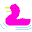

 Welcome! Our goal at Ducks of the World is to be your go-to for all duck related news and so much more. We post articles with duck oriented insights, views into the latest ducks featured in modern art, as well as educational documents for the scientifically curious. We do not discriminate by age; you will find no patronizing kids section here. The fun, beauty, and wonder of ducks is available to everyone. If you've got a brain (or a heart!), you may find something to fill its duck-shaped hole in it.
I've made a new VIDEO GAME called Duck Murderer 2!! You can play it at the GAMES AND APPS scection of the site.
Ducks of the World is pleased to announce a brand new VIDEO GAME taking place in the DotW universe: DUCK DUNGEON. You can find it in the Games and Apps section of the website.
Ducks of the World is pleased to announce the flagship video starting on the Ducks of the World Youtube Channel called, "Duck in a Spacehole", which you can find here. The intention is to relax, or have on in the background at a party.
More art has been created at the expense of
An immortal duck? Who could have guessed it. Who could have hoped for better. Count Duckula and the Ancient Mystery in the Ducks in Popular Culture section is a journey into the mind of a child. Experience true fear once again.
DUCK DUCK DUCK DUCK DUUUCK DUCK DUCK DUYCK DUCK
I wrote a bunch of reviews of duck emojis and I'm really tired now. I hope it was worth it for you. The things I do. You can find it yourself. I'm kind of grumpy today, sorry.
What is anger? Why do ducks get angery? I dunno but tldr; you should lift. I've also included a new link page with a fun link. You can expect more as the weeks roll on.
New shirt design at Duck Store Page.
Duck boat
There's the store now! Please only consider getting a shirt if you'll wear it.
Brand new art is available for you in the The Arts section of the site. Is this... more than art? Yes.
A Ducks of the World reader submitted an interactive 3D duck viewer written entirely in Javascript. Contains the scoop
In addition, the new contact email is available. Please use it to send us your own programs, art, duck thoughts, et centera, so that we may share it here. The address is ducksemailaddress at gmail .
New art at
An anonymous DotW reader has submitted several beautiful pieces to be displayed in the art section. Thank you, anonymous reader!! In addition, I made a few duck themed arts this week as well. Check em out why do'n'tcha'!
Today, I have written a tutorial on how to draw an ampersand, which is an alternative to writing out "and." Read it here. This also kickstarts the Featured Articles section of the website!!
hi I drew another duck today check it out
I thought of how 16 years after a woman wore a dress, journalists were making sure to remind their audience how ghastly of a thing to do it was for that lady to do. It's here
You've gotta admit it, you're surprised Ducks of the World is growing so rapidly. Check out the new art showcase, and its first submission, Perfect Duck, drawn by yours truly. Get yourself EXTREMELY excited.
A new section has been created. Ducks in the Media will be highlighting even the most subtle references to the duck in popular culture. It kicks off with a funny moment on the hit sitcom Cheers!. You can find it in the Ducks in the Media section above or link to it directly from here.
I spent a long time learning how to make a website and now you reap the rewards. Ducks of the World is born. It is not so impressive now, but please keep in mind that as time goes on we will be filling this space with a plethora of duck factsheets and curiosities.
We intend for the site to be driven by the passion of the community. If you are interested in contacting the webmaster so you can submit your original duck themed media, please do so and we will consider hosting it here, as well as a link back to your own personal page!